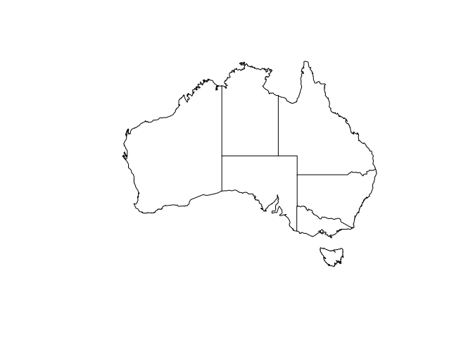
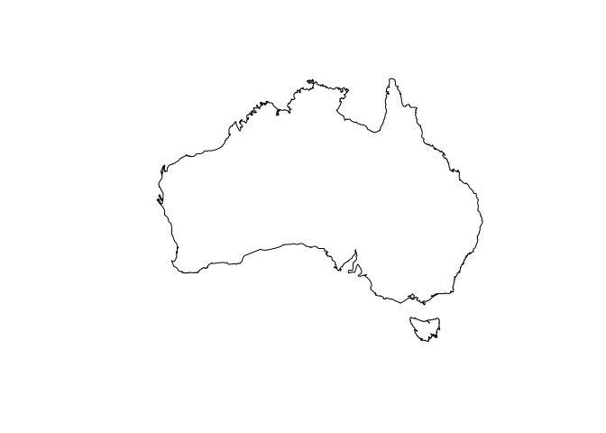
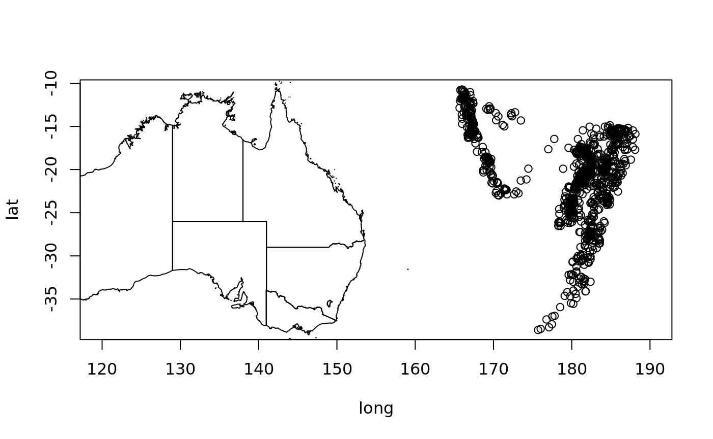
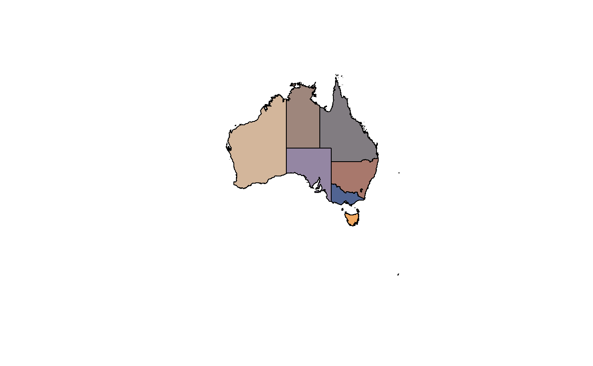
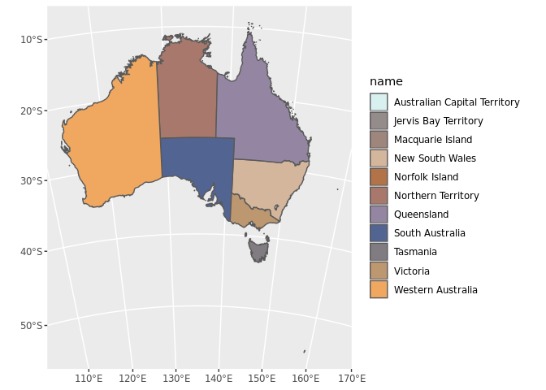
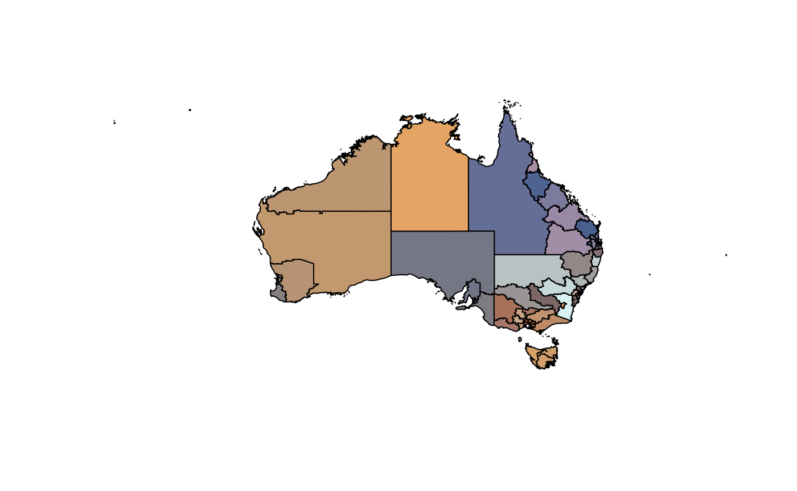
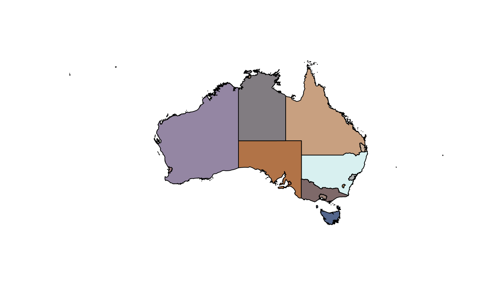

Installation
ozmaps may be installed directly from github.
The package includes some simple features data, which can be used independently of ozmaps with the ‘sf’ package. If required, install sf from CRAN.
Usage
Plot Australia with states.

Plot Australia without states.

Add to an existing plot.

Obtain the data used in sf form.
sf_oz <- ozmap_data("states")
#> returning `sf` data format
#> to use/plot ensure `sf` package is installed, then `library(sf)`
tibble::as_tibble(sf_oz)
#> # A tibble: 9 x 2
#> NAME geometry
#> <chr> <MULTIPOLYGON [°]>
#> 1 New South Wales (((150.7016 -35.12286, 150.6611 -35.11782, 150.6373 …
#> 2 Victoria (((146.6196 -38.70196, 146.6721 -38.70259, 146.6744 …
#> 3 Queensland (((148.8473 -20.3457, 148.8722 -20.37575, 148.8515 -…
#> 4 South Australia (((137.3481 -34.48242, 137.3749 -34.46885, 137.3805 …
#> 5 Western Australia (((126.3868 -14.01168, 126.3625 -13.98264, 126.3765 …
#> 6 Tasmania (((147.8397 -40.29844, 147.8902 -40.30258, 147.8812 …
#> 7 Northern Territory (((136.3669 -13.84237, 136.3339 -13.83922, 136.3532 …
#> 8 Australian Capital… (((149.2317 -35.222, 149.2346 -35.24047, 149.2716 -3…
#> 9 Other Territories (((167.9333 -29.05421, 167.9188 -29.0344, 167.9313 -…Plot with a custom palette.
library(sf)
nmjr <- colorRampPalette(paletteer::paletteer_d(package = "ochRe", palette = "namatjira_qual"))(nrow(sf_oz))
plot(st_geometry(sf_oz), col = nmjr)
## soon...plot directly with ggplot2
library(ggplot2)
ggplot(sf_oz, aes(fill = NAME)) + geom_sf() + coord_sf(crs = "+proj=lcc +lon_0=135 +lat_0=-30 +lat_1=-10 +lat_2=-45 +datum=WGS84") + scale_fill_manual(values = nmjr)
Plot the ABS layers (from 2016).
opal <- colorRampPalette(paletteer::paletteer_d(package = "ochRe", palette = "namatjira_qual"))
ozmap("abs_ced", col = opal(nrow(abs_ced)))

Please note that the ‘ozmaps’ project is released with a Contributor Code of Conduct. By contributing to this project, you agree to abide by its terms.